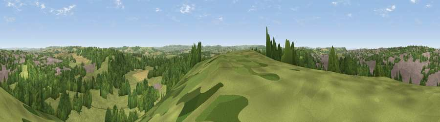

Viewpoint near Yeovil
#16349 in England · top 37% of its area beats it · near YeovilWhere it is
The exact computed spot (ST 56275 15475). Click the marker for map links.
The view, rendered

A 360° render of this exact spot computed from the terrain model, tree cover and land cover — summer colours, afternoon light, calibrated against photographs of famous viewpoints. Real trees, hedges and buildings will differ in detail.
The panorama
Grey silhouette: terrain skyline in each direction (720 bearings, Earth curvature and refraction included). Dashed green: skyline with trees (+15 m) and buildings (+8 m) as obstacles. Blue strip: how far the ground is visible on each bearing.
Where the view opens
Wedge length = distance to the farthest visible ground on that bearing (vegetation-aware). Rings at 10, 25 and 50 km.
What fills the view
43% grassland · 34% woodland · 19% built-up · 4% cropland
Angular shares of the visible panorama (visual magnitude), not map area. Landscape diversity 0.51 (0–1 Shannon).
Key numbers
More beautiful places nearby
The staircase of upgrades: each row has a higher view potential than everything closer. Driving times are estimates from straight-line distance, calibrated against real road routing — check an actual route before setting out.
| Place | Direction | Drive | Score |
|---|---|---|---|
| Viewpoint near Chilthorne Domer | NW · 4 km | ~9 min | 62.2 |
| Viewpoint near Nether Compton | ENE · 6 km | ~12 min | 67.8 |
| Viewpoint near Lillington | ESE · 7 km | ~14 min | 68.7 |
| Montacute Castle | WNW · 7 km | ~15 min | 69.5 |
| Round Hill | ENE · 7 km | ~15 min | 70.4 |
| Ham Hill | WNW · 9 km | ~17 min | 73.5 |
| The Beacon | NE · 11 km | ~20 min | 75.8 |
| Viewpoint near North Poorton | SSW · 16 km | ~29 min | 77.0 |
50.93705, -2.62365 · source: screening · position refined by local search. Computed location — check access rights before visiting.